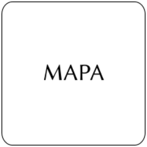

Hippocampus erectus
| Caballito de mar rayado | |
|---|---|
 | |
| Riesgo de extinción | |
 Vulnerable (UICN) | |
| Clasificación científica | |
| Reino: | Animalia |
| Filo: | Chordata |
| Clase: | Actinopterygii |
| Orden: | Syngnathiformes |
| Familia: | Syngnathidae |
| Género: | Hippocampus |
| Especie: | Hippocampus erectus |
| Nombre binomial | |
|
Hippocampus erectus Perry, 1810 | |
| Distribución | |
|
 Mapa de distribución de Hippocampus erectus | |
Contenido
Información de Evaluación
- Categoría y Criterio Regional: Vulnerable A4cd
- Fecha de Evaluación Regional: 2015
- Evaluadores: Jesús Morales-Campos y Ariany García-Rawlins
- Categoría y Criterio Global: Vulnerable A2cd
Justificación
Evaluaciones Previas
1999: No Evaluada (NE)
2008: Casi Amenazada (NT)
Información General
Nombres comunes
Caballito de mar, lined seahorse, northern seahorse.
Notas taxonómicas
Sinónimos
Descripción
Su cuerpo se caracteriza por la presencia de una cabeza bien diferenciada, ubicada en ángulo recto con respecto al torso, donde se distinguen dos aletas pectorales a los lados, una dorsal sobre los dos últimos anillos del tronco y el primero de la cola, así como una anal, pequeña, en la región ventral del abdomen. Su dimorfismo sexual está evidenciado en la bolsa incubadora que portan los ejemplares machos (Lourie et al. 1999). El perfil ventral de la región torácica es marcadamente convexo; tronco ancho y robusto en los individuos adultos, con un ancho entre el 9° y 10° anillo comprendido entre 1,6 y 2,8 veces la longitud del mismo. Hace gala de una coloración muy variable, hay caballitos marrones, negros, beige, amarillos y rojizos, por lo general con líneas blancas o marrones a los lados de la cabeza y el cuerpo, dependiendo del color integral de éste y de la coloración del entorno. Exhibe 11 anillos en el tronco, de los cuales el 1°, 3° y 5° son prominentes en vista dorsal, y de 35 a 38 aros en la cola, en promedio 36. Su aleta dorsal se ubica sobre tres anillos, dos del torso y uno de la cola. Muestra de 16 a 18 radios en la aleta dorsal, siendo 18 lo más común. Su aleta pectoral lleva 16 radios blandos, mientras que la anal posee solo cuatro. Dispone de una espina supraocular que se reconoce por su tendencia a ser unicúspide y puntiaguda, además de una espina en la mejilla. Su rostro corto, alcanza entre 2,7 y 3,2 veces la longitud de la cabeza, con una coroneta alta y prominente, cuya altura comprende entre 1,7 y 2,9 veces la del rostro (Ron 2010).
Distribución
Hippocampus erectus se encuentra en el Atlántico Centro-occidental y se distribuye desde Nova Scotia, Canadá y el norte del Golfo de México hasta Panamá y Venezuela (Froese y Pauly 2014). En nuestro país los ejemplares se encuentran asociados a manglares, praderas de fanerógamas marinas como Thalassia testudinum, y en zonas de arrecifes coralinos (Cervigón 1991).
- Sistema: Marino
- Bioregión:
- Intervalo altitudinal (m): 100
- Endémica: No
Situación
Su monitoreo en lagunas litorales y superficies costeras del oriente del país, donde era común señalar su existencia en altas cantidades, indica muy bajas densidades poblacionales. Esto concuerda con los elevados niveles de reducción de sus colonias a lo largo de su área de distribución, estimados en al menos 30%. Sin embargo, como H. erectus presenta un alto grado de plasticidad fenótipica para mimetizarse con su entorno, lo que hace muy difícil su identificación taxonómica y separación de la especie congenérica H. reidi, es probable que sus abundancias pudieran estar siendo sobreestimadas aún (E. Ron obs. pers.). Estudios recientes realizados con marcadores moleculares del ADN mitocondrial y nuclear indican que hay una fuerte estructuración entre sus poblaciones del Golfo de México y el mar Caribe, lo que sugiere que haya al menos cinco unidades de manejo (Florida, México, Honduras, Colombia y Venezuela) (Padrón 2011). En función de lo anterior y dado que está entre las especies más comercializadas de caballos marinos, sobre todo con fines ornamentales (Baum y Vincent 2005), fue evaluada y calificada como Vulnerable, con base en el enfoque precautorio aconsejado por IUCN. A nivel global también se le incluye en la misma categoría (IUCN 2014).
- EOO (km2): Temporalmente sin información
- AOO (km2): Temporalmente sin información
- Tendencia Poblacional: Decreciendo
Amenazas
Las colonias de caballitos de mar apuntan a un considerable problema de supervivencia, que se deriva de la combinación de la pérdida y fragmentación de sus hábitats naturales (tales como praderas de fanerógamas, ecosistemas coralinos y de manglar, la pesca intencional para su comercialización como recursos medicinales, peces ornamentales y la fabricación de curiosidades artesanales) y las capturas accidentales por aparejos de pesca no selectivos (Lourie et al. 1999). La realización de actividades de pesca de arrastre durante muchos años en las costas del país puede haber sido un factor importante en la disminución de su abundancia poblacional, como se ha sugerido en relación con otras localidades de su área de distribución (Baum et al. 2003a). Aunque en Venezuela no se tienen indicios de que haya un comercio nacional o internacional que estimule el desarrollo de operaciones de captura para el abastecimiento de las especies del género Hippocampus, como ocurre en otros países vecinos (Baum y Vincent 2005), no se puede descartar el funcionamiento e incremento de labores comerciales a futuro, dado su atractivo como peces ornamentales y el aumento de las prácticas de acuariofilia marina, facilitadas de un modo intenso por la introducción de agua de mar artificial en el mercado.
Conservación
Aunque en Venezuela no se cuenta con medidas específicas para su preservación, todo el género Hippocampus ha sido incluido en el Apéndice II de la Convención sobre el comercio internacional de especies amenazadas de fauna y flora silvestres (Cites 2014</a>), lo que implica que los 165 países miembros de esta Convención, entre ellos nuestro país, deben llevar a cabo un monitoreo sobre el comercio internacional de los caballitos de mar y generar el conocimiento necesario sobre sus poblaciones silvestres (Cites 2002</a>), de manera que se pueda contar con la información suficiente para evaluar y determinar los impactos que se ejercen sobre ellas.
Autorías
Autores originales
Ernesto Ron, José Patti y Mariana Padrón
Colaboradores
Ilustrador
Pigmalion's Workshop
Referencias
- Baum, J. K., Meeuwig, J. y Vincent, A. C. J. (2003a). Bycatch of lined seahorses (Hippocampus herectus) in a Gulf of México shrimp trawl fishery. Fishery Bulletin 101(4): 721-731.
- Baum, J. K. y Vincent, A. C. J. (2005). Magnitude and inferred impacts of the seahorse trade in Latin America. Environmental Conservation 32: 305-319.
- Cervigón, F. (1991). Los peces marinos de Venezuela. 2 ediciónCaracas, Venezuela. 423 pp.
- Cites. (2002). Conservación de los Caballitos de Mar y otros Miembros de la Familia Syngnathidae. Duodécima Reunión de la Conferencia de las Partes, Santiago, Chile.
- Cites. (2014). Apéndices I, II y III (válidos desde el 14 de septiembre de 2014). Convención sobre el Comercio Internacional de Especies Amenazadas de Fauna y Flora Silvestres (CITES). 47 pp.
- Froese, R. y Pauly, D. (2014). FishBase. Disponible en www.fishbase.org.
- IUCN (2014). The IUCN Red List of Threatened Species. Version 2014.3. Accesible en www.iucnredlist.org.
- Lourie, S. A., Vincent, A. C. J. y Hall, H. J. (1999). Seahorses: an identification guide to the world's species and their conservation. Project Seahorse. London. 214 pp.
- Padrón, M. (2011). Phylogeography of two sympatric seahorses from the Caribbean. Magister Thesis, San Francisco State University. California, United States. 51 pp.
- Rodríguez, J. P. y Rojas-Suárez, F. (1999). Libro Rojo de la Fauna Venezolana, segunda edición. PROVITA, Fundación Polar. Caracas. 444 pp.
- Rodríguez, J. P. y Rojas-Suárez, F. (Eds.) (2008). Libro Rojo de la Fauna Venezolana, tercera edición. Provita y Shell Venezuela, S. A. Caracas, Venezuela. 364 pp.
- Ron, E. (2010). Análisis morfométrico, merístico, filogenético y filogeográfico del caballo de mar Hippocampus reidi (Ginsburg 1933) (Teleostei: Syngnathidae) de la costa nororiental de Venezuela. Tesis de Doctorado, Universidade Estadual Paulista "Julio Mesquita Filho". Campus de Botucatu, Brasil. 143 pp.
- Ron, E., Patti, J. y Padrón, M. (2015). Caballito de mar, Hippocampus erectus. En: J.P. Rodríguez, A. García-Rawlins y F. Rojas-Suárez (eds.) Libro Rojo de la Fauna Venezolana. Cuarta edición. Provita y Fundación Empresas Polar, Caracas, Venezuela. Recuperado de: animalesamenazados.provita.org.ve/content/caballito-de-mar-hippocampus-erectus Lun, 05/02/2018 - 12:24